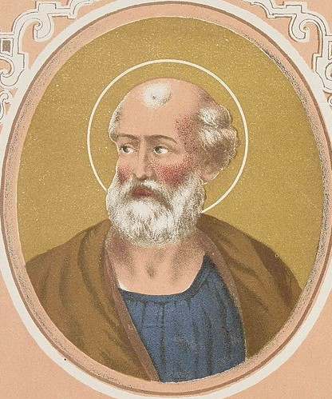

<h3>Predecessor	&#129044; <a href=" p026Felix.html ">St. Felix </a></h3>


<br>
<h1 style="color:red;">St. Eutychian </h1>
<br>
<h3>Successor &#129046; <a href="p028Caius.html">St. Caius </a></h3>

<h3>

   St. Eutychian (275-283). Practically nothing is known of his pontificate.

</h3>


<br>
<h5>
McSorley, Joseph.<i> An Outline History of the Church by Centuries (from St. Peter to Pius XII)</i>. 2nd Ed. 1944.
</h5>